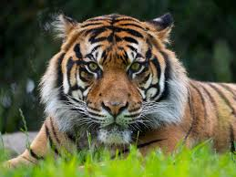

| Image |
Name |
Description |
 |
Lion |
The lion is a large cat of the genus Panthera, currently ranging only in Sub-Saharan Africa and India.
It has a muscular, broad-chested body; a short, rounded head; round ears; and a dark, hairy tuft at the tip of its tail. |
|  |
Tiger |
The tiger is a large cat and a member of the genus Panthera native to Asia.
It has a powerful, muscular body with a large head and paws, a long tail and orange fur with black, mostly vertical stripes. |
.jpg) |
Dinosaur |
Dinosaurs are a diverse group of reptiles of the clade Dinosauria.
They first appeared during the Triassic period, between 243 and 233.23 million years ago,
although the exact origin and timing of the evolution of dinosaurs is a subject of active research. |